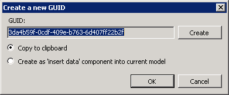

In this Article I'm going to explain how to inspect other Plugins to learn how to implement items that aren't in the Developer Guide PDF.
Table of Contents
There are a number of decompilers available
- JustDecompile from Telerik
 dotPeek from
dotPeek from  JetBrains
JetBrains- ILSpy
We need some Plugins to look at, grab them from the folder you deploy yours too.
[Install Drive]:\Program Files\Symantec\Workflow\Designer\Plugins
There are a number to choose from, firstly we will look at Create GUID.
LogicBase.Plugins.CreateGUID.dll
Open
- GUIDPlugIn.cs
The main difference here is in the PerformAction method.
public void PerformAction(AbstractOrchestrationProject project)
{
GUIDForm gUIDForm = new GUIDForm();
if (gUIDForm.ShowDialog() == DialogResult.OK)
{
string guid = gUIDForm.Guid;
ActionType selectedAction = gUIDForm.SelectedAction;
if (selectedAction == ActionType.CreateAsDataComponent)
{
IComponentModel primaryComponentModel = project.GetPrimaryComponentModel();
InsertDataComponent insertDataComponent = new InsertDataComponent();
insertDataComponent.set_DataType(typeof(string));
insertDataComponent.set_IsArray(false);
insertDataComponent.set_Value(guid);
insertDataComponent.Location = new PointF(20f, 20f);
primaryComponentModel.AddComponent(insertDataComponent);
return;
}
if (selectedAction == ActionType.CopyToClipboard)
{
Clipboard.SetDataObject(guid, true);
}
}
}
In Workflow Manager click on the Menu - Plugins | Create GUID

This opens a Form and depending on the chosen action it does either of two things.
| BUG: This states "current model" but actually puts it into the Primary model. |
|---|
If we look at the code it's asking for the Primary.
IComponentModel primaryComponentModel = project.GetPrimaryComponentModel();
Or saving to the Clipboard
Clipboard.SetDataObject(guid, true);
If you want to work with Components you will need to add a ref.
using LogicBase.Components.Default.Process;
Find the component you want to work with and set the desired properties.
Custom Form
You can create a WinForms Form and design it how you would any C# project.
As you can see from the above code just create an instance and use how you would normally, nothing specific to WF.
You can try creating a Project from the DLL (using JustDecompile) but I've had issues getting this to work.

(load failed)
E:\WF\LogicBase.Plugins.CreateGUID\LogicBase.Plugins.CreateGUID.csproj : error : The project file could not be loaded. Data at the root level is invalid. Line 1, position 1. E:\WF\LogicBase.Plugins.CreateGUID\LogicBase.Plugins.CreateGUID.csproj
If you look at the .csproj in notepad there is an object ref error.
If you copy another blank projects .csproj, rename it to this Project name you can play about with some files to make it work, add Existing Items and pull in the files that were created.